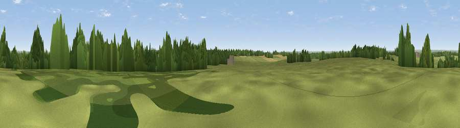

Worthy Hill
#30126 in England · top 53% of its area beats it · near MinetyThe view, rendered

A 360° render of this exact spot computed from the terrain model, tree cover and land cover — summer colours, afternoon light, calibrated against photographs of famous viewpoints. Real trees, hedges and buildings will differ in detail.
The panorama
Grey silhouette: terrain skyline in each direction (720 bearings, Earth curvature and refraction included). Dashed green: skyline with trees (+15 m) and buildings (+8 m) as obstacles. Blue strip: how far the ground is visible on each bearing.
Where the view opens
Wedge length = distance to the farthest visible ground on that bearing (vegetation-aware). Rings at 10, 25 and 50 km.
What fills the view
68% grassland · 19% woodland · 10% cropland · 2% built-up
Angular shares of the visible panorama (visual magnitude), not map area. Landscape diversity 0.39 (0–1 Shannon).
Key numbers
More beautiful places nearby
The staircase of upgrades: each row has a higher view potential than everything closer. Driving times are estimates from straight-line distance, calibrated against real road routing — check an actual route before setting out.
| Place | Direction | Drive | Score |
|---|---|---|---|
| Viewpoint near Purton | E · 6 km | ~13 min | 51.6 |
| Hook Hill | ESE · 6 km | ~13 min | 51.9 |
| Viewpoint near Tockenham | S · 6 km | ~14 min | 53.9 |
| Viewpoint near Bradenstoke | SSW · 10 km | ~20 min | 56.4 |
| Viewpoint near Foxham | SSW · 10 km | ~20 min | 60.5 |
| Viewpoint near Broad Town | SE · 12 km | ~23 min | 65.8 |
| Viewpoint near Broad Town | SE · 12 km | ~23 min | 66.9 |
| Viewpoint near Cherhill | S · 19 km | ~33 min | 71.2 |
51.59206, -1.97281 · source: dobih hill · position refined by local search. Computed location — check access rights before visiting.